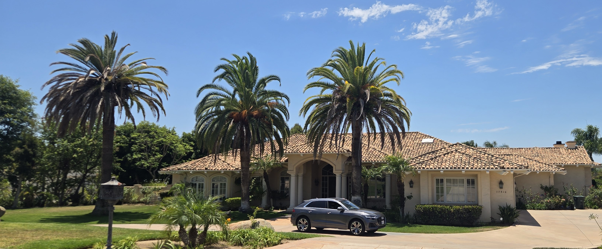
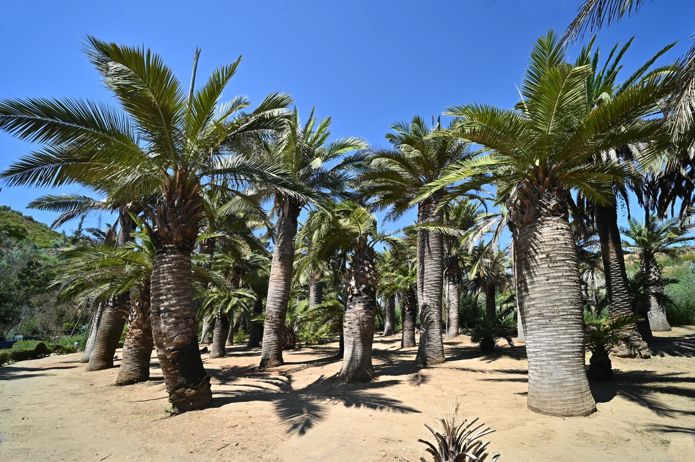
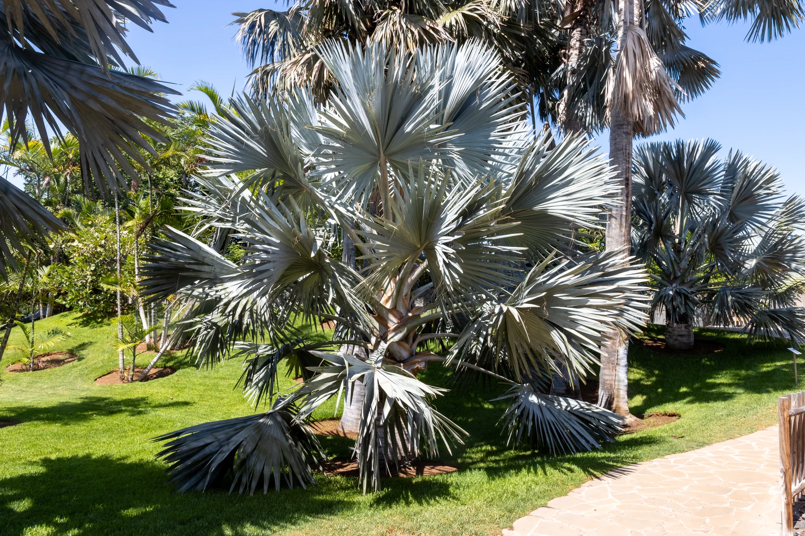

Canary Island date palm
The primary local target and the center of SDPP preventive treatment work.
Species protection
South American palm weevil prevention, treatment, monitoring, sourcing, and replacement planning for high-value Canary Island date, Chilean wine, and Bismarck palms.
Owner-Led Palm Stewardship
Owner-led South American palm weevil prevention and licensed treatment for valuable mature palms, with assessments, recurring care, decline response, and qualified-contractor coordination.
California Pest Control Business License No. 47756California Qualified Applicator License No. 175295Category B — Landscape MaintenanceInsured
Treatment recommendations and applications remain subject to the pesticide label, applicable law, site conditions, and agreed scope.
High-value palms
Canary Island date palms remain the primary SAPW target in San Diego. Chilean wine and Bismarck palms are confirmed California hosts and can represent decades of growth that cannot be quickly replaced.
The primary local target and the center of SDPP preventive treatment work.
A confirmed California SAPW host and a slow-growing specimen that deserves early attention.
A confirmed California SAPW host whose scale and character make replacement a poor substitute for prevention.



Protection before replacement
I review the species, visible condition, site, pest pressure, and treatment history before recommending preventive treatment, monitoring, or another response.
See SAPW protection and treatment · See replacement planning
Private inquiry
Tell me about the property, the palms, and what you are responsible for. I work with managed palm portfolios, large estates, and homeowners protecting important mature palms.